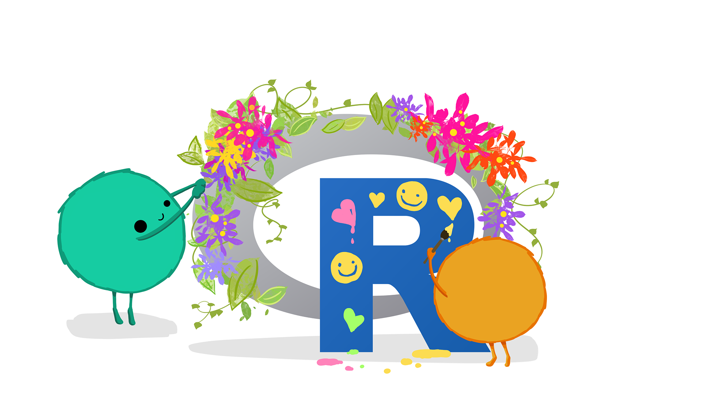

![]()

Art by Allison Horst
I’ll write a bit about the benchmarks here.
Can run on a normal vector (precludes polars).
Here are the packages under consideration (if you have additions, please open an issue on Github):
- data.table
- zoo
- RcppRoll
- runner
- slider
- RollingWindow
- roll
- runstats
- polars
We are considering the following computations
- Mean
- Median
- Min
- Max
- Sum
- Product
- SD
- MAD
- Correlation
- Covariance
- Skew
- Custom functions
We also keep track of various features:
- Alignment
- NA handling
- Weight
Install data.table form the rollmedian branch:
devtools::install_github("Rdatatable/data.table", ref = "rollmedian")
Install roll from Github:
devtools::install_github("jasonjfoster/roll")
Install RollingWindow from Github:
devtools::install_github("andrewuhl/RollingWindow")
library(tibble)
library(dplyr)
library(microbenchmark)
library(slider)
library(runner)
library(zoo)
library(RollingWindow)
library(RcppRoll)
library(roll)
library(data.table)
library(runstats)df <- tibble(x = rnorm(1000000))
n <- 51
n_times <- 10
n_half <- floor(n/2)Mean
microbenchmark(
"data.table::frollmean" = data.table::frollmean(df$x, n),
"roll::roll_mean" = roll::roll_mean(df$x, width = n),
"RollingWindow::RollingMean" = RollingWindow::RollingMean(df$x, n),
"runstats::RunningMean" = runstats::RunningMean(df$x, W = n),
"slider::slide_mean" = slider::slide_mean(df$x, before = n_half, after = n_half),
"RcppRoll::roll_mean" = RcppRoll::roll_mean(df$x, n = n, fill = NA),
"zoo::rollmean" = zoo::rollmean(df$x, k = n, fill = NA),
"runner::mean_run" = runner::mean_run(df$x, k = n, na_pad = TRUE),
times = n_times)Unit: milliseconds
expr min lq mean median
data.table::frollmean 2.241879 2.340252 11.07247 2.713214
roll::roll_mean 11.808366 12.351446 14.35429 12.473165
RollingWindow::RollingMean 16.977660 17.465734 33.28365 23.602618
runstats::RunningMean 14.769024 16.227194 44.86687 25.787892
slider::slide_mean 73.969034 74.136307 76.08521 75.195895
RcppRoll::roll_mean 125.844943 127.134127 129.67824 129.576611
zoo::rollmean 256.682808 313.302683 346.79951 322.212449
runner::mean_run 1198.164818 1228.970005 1369.71537 1285.969585
uq max neval
6.031607 79.03656 10
14.610513 24.02796 10
26.719363 128.51629 10
94.260361 108.86306 10
77.303700 80.14807 10
131.924998 135.28932 10
367.791690 531.82976 10
1547.052810 1606.93501 10Median
microbenchmark(
"data.table::frollmedian" = data.table::frollmedian(df$x, n),
"RollingWindow::RollingMedian" = RollingWindow::RollingMedian(df$x, n),
"zoo::rollmedian" = zoo::rollmedian(df$x, k = n, fill = NA),
"roll::roll_median" = roll::roll_median(df$x, width = n),
"RcppRoll::roll_median" = RcppRoll::roll_median(df$x, n = n, fill = NA),
times = n_times)Unit: milliseconds
expr min lq mean median
data.table::frollmedian 69.04398 71.51425 89.17143 73.78828
RollingWindow::RollingMedian 57.11521 57.80190 65.25114 64.92265
zoo::rollmedian 316.62932 352.47701 356.72934 359.56134
roll::roll_median 501.02063 503.81910 541.68486 526.72164
RcppRoll::roll_median 1407.80392 1409.40807 1536.79857 1466.03330
uq max neval
77.92332 225.23769 10
69.99089 77.45782 10
365.43327 396.97943 10
538.86600 665.62833 10
1633.18224 1909.33519 10Min
microbenchmark(
"data.table::frollmin" = data.table::frollmin(df$x, n),
"roll::roll_min" = roll::roll_min(df$x, width = n),
"RollingWindow::RollingMin" = RollingWindow::RollingMin(df$x, n),
"RcppRoll::roll_min" = RcppRoll::roll_min(df$x, n = n, fill = NA),
"runner::min_run" = runner::min_run(df$x, k = n, na_pad = TRUE),
times = n_times)Unit: milliseconds
expr min lq mean median
data.table::frollmin 5.411031 5.517803 5.827558 5.792026
roll::roll_min 22.984927 23.445202 23.864652 23.630812
RollingWindow::RollingMin 44.843584 46.259335 52.213656 48.525513
RcppRoll::roll_min 349.503761 350.284608 355.950302 352.792411
runner::min_run 798.355932 855.048846 1050.799176 1080.054734
uq max neval
6.037268 6.309239 10
24.170740 25.898749 10
56.849840 67.821354 10
359.726967 371.640967 10
1174.581112 1313.950563 10Max
microbenchmark(
"data.table::frollmax" = data.table::frollmax(df$x, n),
"roll::roll_max" = roll::roll_max(df$x, width = n),
"RollingWindow::RollingMax" = RollingWindow::RollingMax(df$x, n),
"RcppRoll::roll_max" = RcppRoll::roll_max(df$x, n = n, fill = NA),
"runner::max_run" = runner::max_run(df$x, k = n, na_pad = TRUE),
"zoo::rollmax" = zoo::rollmax(df$x, k = n, fill = NA),
times = n_times)Unit: milliseconds
expr min lq mean median
data.table::frollmax 5.044174 5.610125 17.85473 6.502458
roll::roll_max 22.839600 24.028406 26.71447 26.783014
RollingWindow::RollingMax 46.142606 48.621133 57.48825 49.863125
RcppRoll::roll_max 350.372535 356.682585 371.96263 369.004938
runner::max_run 784.649671 812.671187 1032.20082 973.548273
zoo::rollmax 1147.328909 1241.116590 1351.98079 1347.271621
uq max neval
9.949318 106.67906 10
29.236878 31.57566 10
52.198837 124.78942 10
386.567315 401.79024 10
1283.828536 1409.76538 10
1477.122353 1548.25293 10Sum
microbenchmark(
"data.table::frollsum, fast" = data.table::frollsum(df$x, n, algo = "fast"),
"roll::roll_sum" = roll::roll_sum(df$x, width = n),
"RollingWindow::RollingSum" = RollingWindow::RollingSum(df$x, n),
"slider::slide_sum" = slider::slide_sum(df$x, before = n_half, after = n_half),
"data.table::frollsum, exact" = data.table::frollsum(df$x, n, algo = "exact"),
"RcppRoll::roll_sum" = RcppRoll::roll_sum(df$x, n = n, fill = NA),
"zoo::rollsum" = zoo::rollsum(df$x, n, fill = NA),
"runner::sum_run" = runner::sum_run(df$x, k = n, na_pad = TRUE),
times = n_times)Unit: milliseconds
expr min lq mean median
data.table::frollsum, fast 2.523604 2.659571 5.861422 3.063187
roll::roll_sum 6.436056 6.642563 9.666256 8.289517
RollingWindow::RollingSum 17.793522 19.836219 26.065329 20.714188
slider::slide_sum 76.570577 78.599420 90.508191 83.782619
data.table::frollsum, exact 36.971424 38.606730 40.628789 39.484406
RcppRoll::roll_sum 126.439986 131.928438 132.967029 134.275092
zoo::rollsum 325.665040 379.251710 480.714105 450.228940
runner::sum_run 1289.769892 1418.957973 1525.079449 1517.706760
uq max neval
4.499823 18.11897 10
12.717016 16.84787 10
33.918532 43.64378 10
88.895235 126.26658 10
40.049148 54.13022 10
135.329135 136.40403 10
608.734517 696.18947 10
1658.419845 1761.18214 10SD
microbenchmark(
"roll::roll_sd" = roll::roll_sd(df$x, width = n),
"RollingWindow::RollingStd" = RollingWindow::RollingStd(df$x, n),
"runstats::RunningSd" = runstats::RunningSd(df$x, W = n),
"RcppRoll::roll_sd" = RcppRoll::roll_sd(df$x, n = n, fill = NA),
times = n_times)Unit: milliseconds
expr min lq mean median
roll::roll_sd 56.31893 56.64948 61.66736 57.28845
RollingWindow::RollingStd 31.00776 33.04170 42.24170 33.54361
runstats::RunningSd 59.02132 67.17997 92.24908 85.79771
RcppRoll::roll_sd 1205.79275 1217.69071 1292.22611 1294.74142
uq max neval
61.82976 79.94232 10
40.37113 107.05237 10
113.36480 163.73572 10
1322.65637 1440.68273 10Custom functions
microbenchmark(
"data.table::frollapply" = data.table::frollapply(df$x, n, sum),
"zoo::rollapply" = zoo::rollapply(df$x, n, sum),
times = n_times)Unit: seconds
expr min lq mean median uq
data.table::frollapply 3.682705 3.903462 4.026611 4.053144 4.202986
zoo::rollapply 11.452357 11.715537 12.500304 12.427262 13.319937
max neval
4.230897 10
14.040575 10Citation
BibTeX citation:
@online{roald-arbøl2024,
author = {Roald-Arbøl, Mikkel},
title = {Benchmarking Rolling Functions in {R}},
date = {2024-10-03},
url = {https://roald-arboel.com/blog/posts/2024/10/03/Benchmark-rolling/},
langid = {en}
}
For attribution, please cite this work as:
Roald-Arbøl, Mikkel. 2024. “Benchmarking Rolling Functions in
R.” October 3, 2024. https://roald-arboel.com/blog/posts/2024/10/03/Benchmark-rolling/.